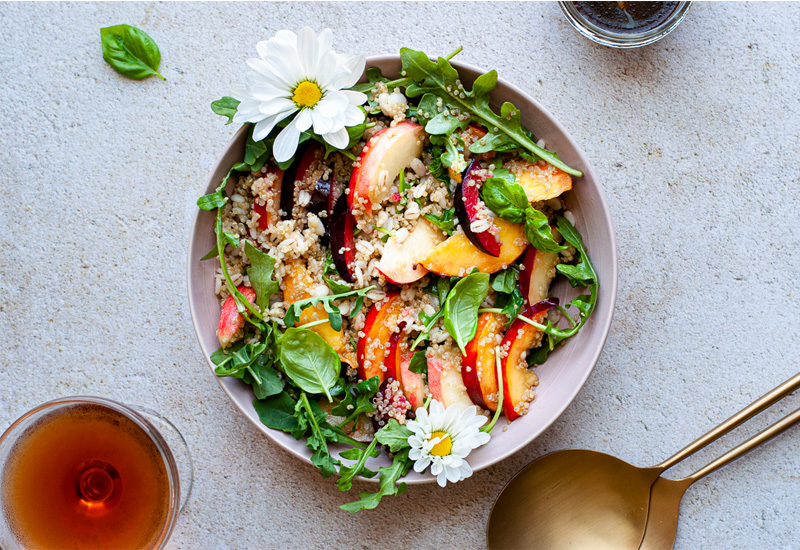

Juicy and Vibrant Arugula Salad

How to Make Arugula Salad with Stone Fruit
Making this salad is a quick and easy process, but the results are spectacular. You'll find a detailed ingredient list and step-by-step instructions in the recipe below:
Ingredients
- 2 tablespoons extra-virgin olive oil
- 2 tablespoons red wine vinegar or rosé vinegar
- 3/4 teaspoon salt
- 1/2 teaspoon black pepper
- 1 1/2 cups red cherry tomatoes, halved
- 1 1/2 cups yellow cherry tomatoes, halved
- 1 (5-ounce package) arugula
- 3/4 cup fresh basil leaves
- 2 nectarines, sliced
- 1 large white peach, sliced
- 1 cup Rainier or other yellow-flesh cherries, pitted and halved
- 1/2 teaspoon flaky sea salt
Directions
Step 1
Whisk together olive oil, vinegar, salt, and pepper in a small bowl for the dressing.
Step 2
Arrange tomatoes, arugula, basil, nectarines, and peach slices on a large platter. Drizzle with half the dressing. Top with cherries, sea salt, and remaining dressing. Serve immediately.
Return to top
Return to main page